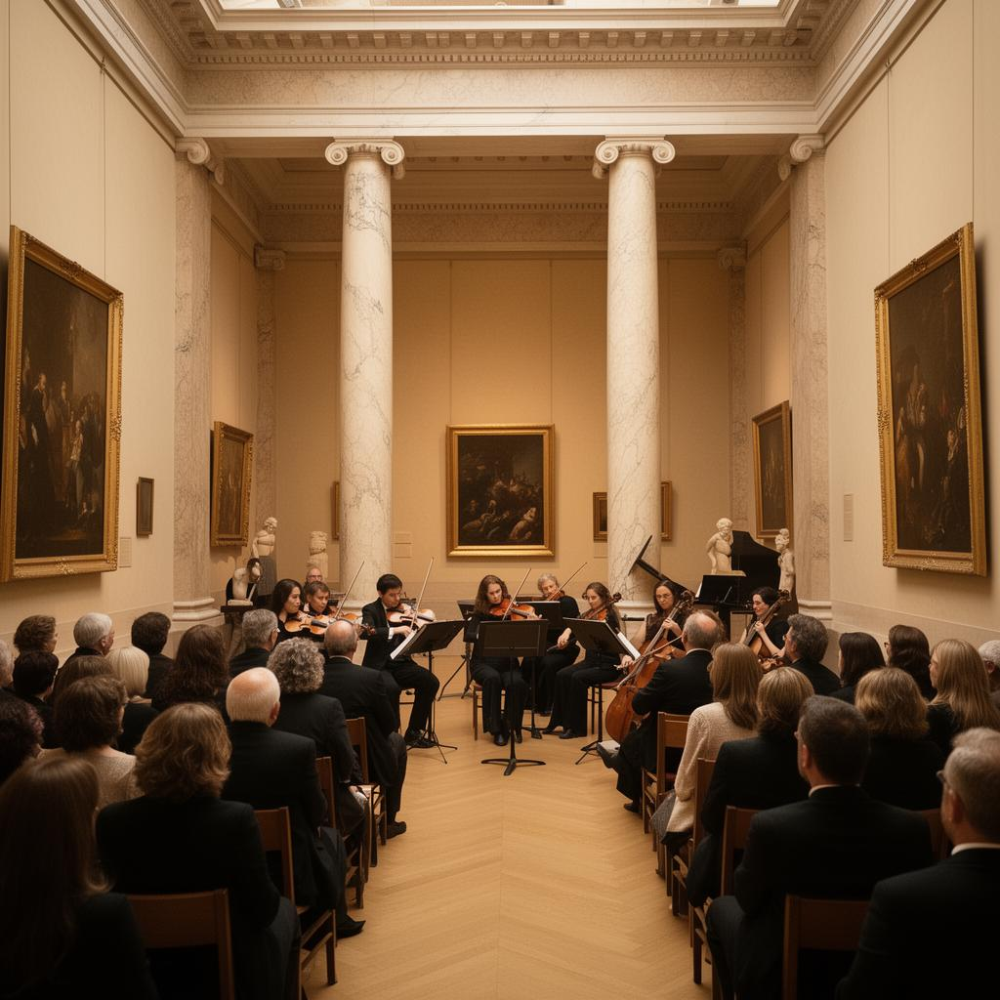
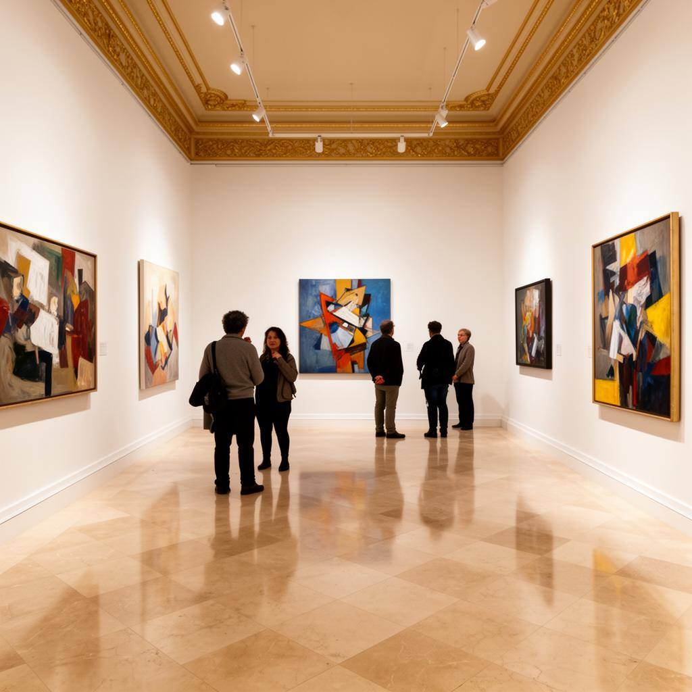
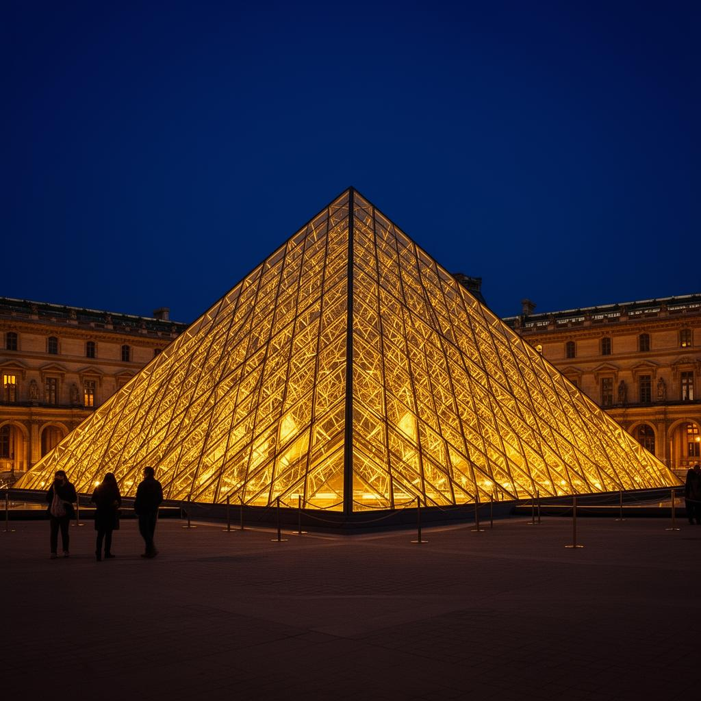

Concerti, mostre temporanee e visite speciali per vivere il museo in modi unici e indimenticabili.

15 Giugno 2025
Un'esperienza musicale unica tra le opere del museo. Musiche di Debussy e Ravel eseguite da un ensemble di archi in una delle sale monumentali del Louvre.

1 Luglio — 30 Settembre 2025
Un percorso espositivo dedicato agli straordinari gioielli e manufatti d'oro dell'antico Egitto, con reperti mai esposti al pubblico provenienti dai depositi del museo.

Ogni Venerdì sera
Il museo resta aperto fino alle 21:45 con un programma di visite guidate tematiche. Atmosfera magica, luci soffuse e un'accoglienza esclusiva per pochi partecipanti.
Data: 22 Giugno 2025
Orario: 10:00 — 12:00
Un percorso creativo per bambini e genitori alla scoperta del mondo egizio. Attività pratiche, disegno e storytelling tra le statue della collezione.
Data: 5 Luglio 2025
Orario: 18:00 — 19:30
Il professor Henri Leclerc racconta il legame tra Leonardo da Vinci e la città di Parigi, attraverso documenti d'archivio e le opere custodite al Louvre.
Data: 12 Settembre 2025
Orario: 20:00 — 23:00
Serata di beneficenza tra le sale della pittura italiana. Menu gourmet ispirato alle corti rinascimentali, accompagnato da un quartetto d'archi.
Data: 20 Ottobre 2025
Orario: 14:00 — 17:00
Accesso esclusivo al laboratorio di restauro del Louvre. I partecipanti osservano i restauratori all'opera su dipinti del XVII secolo.